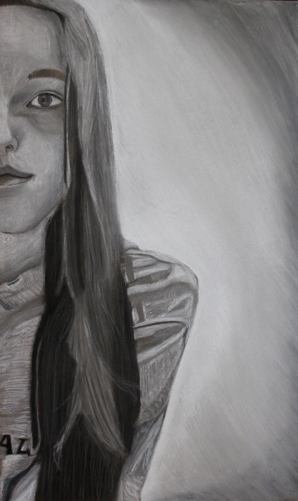
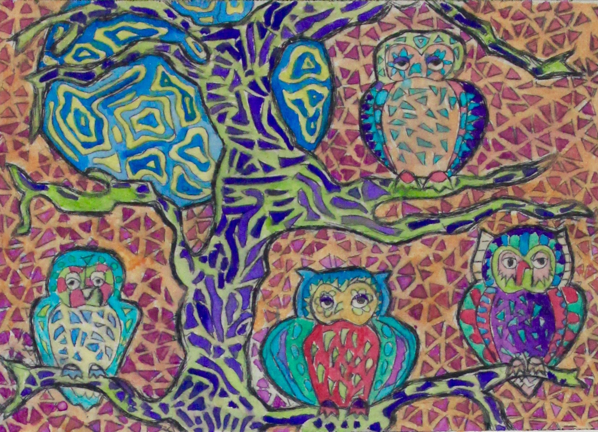
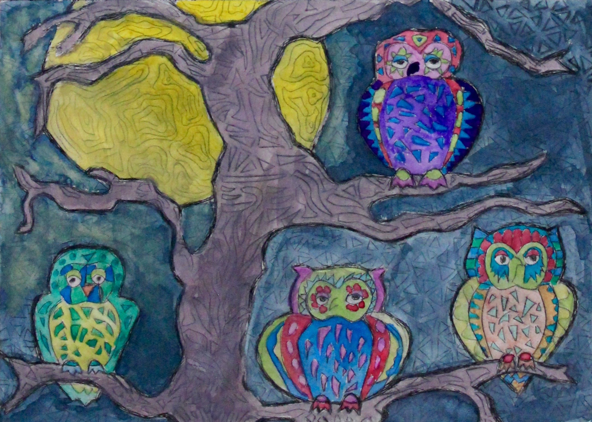
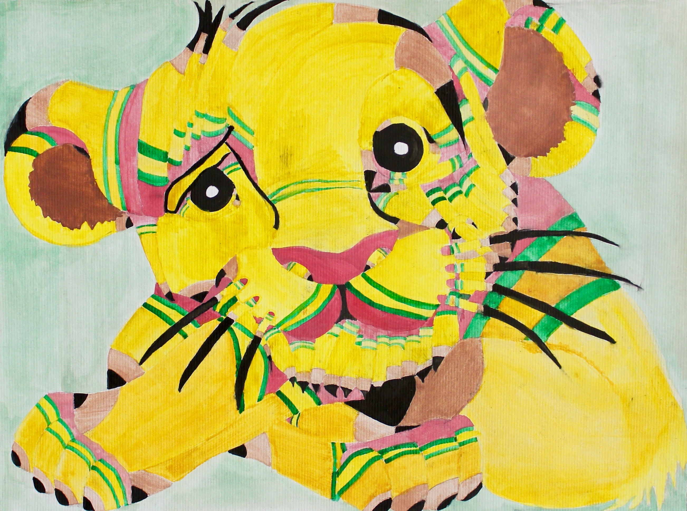
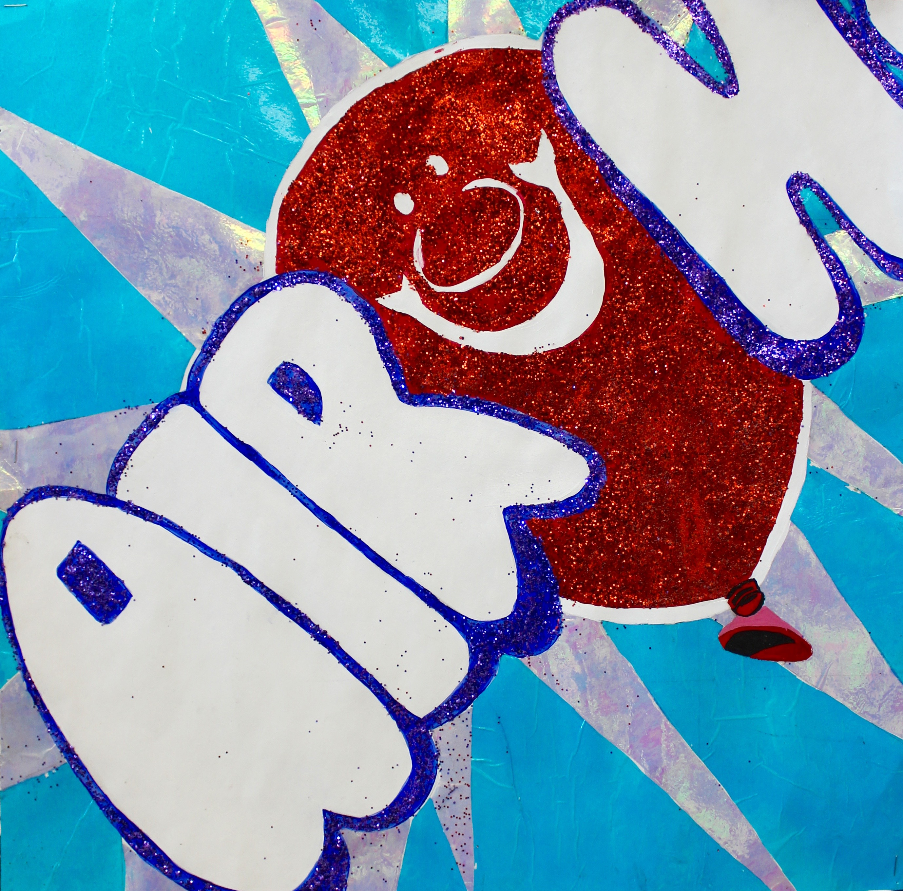
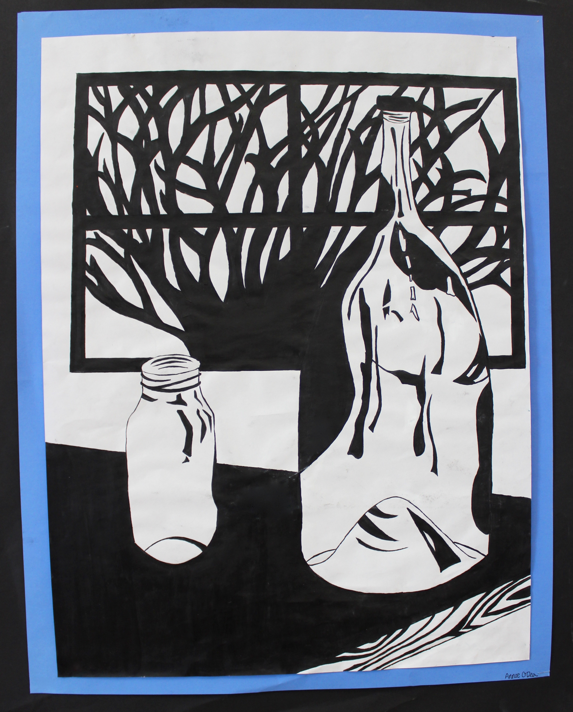
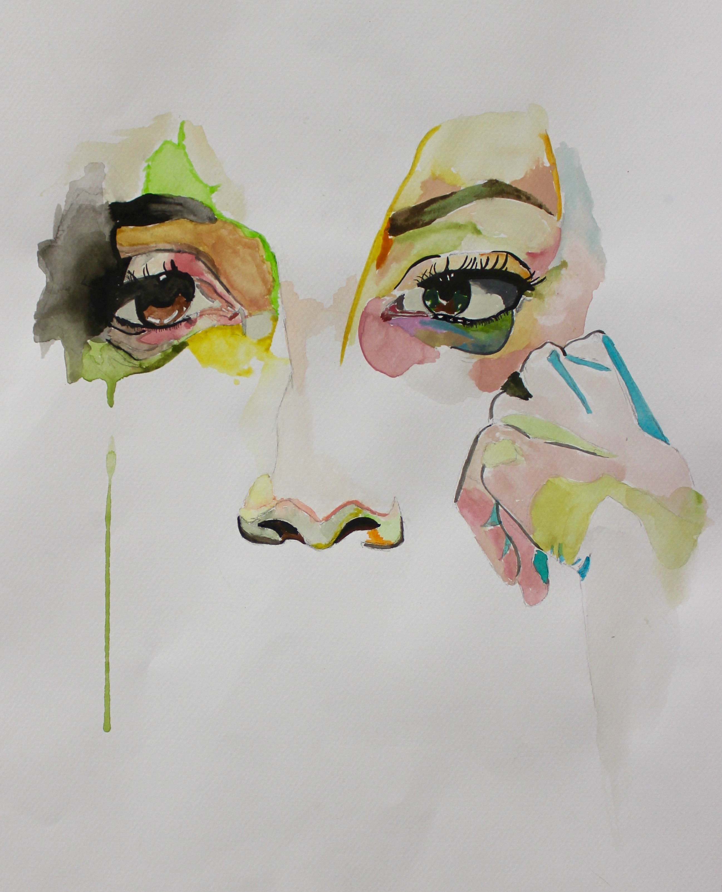
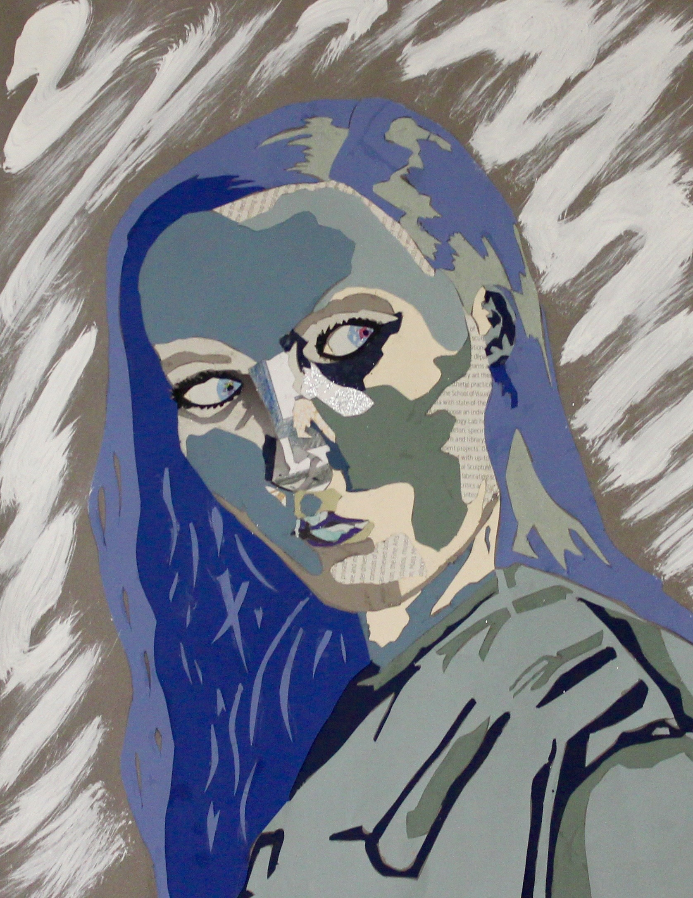

Annie O'Dea

Observational Self-Portrait
Made with: black and white charcoal

Dry Point Etching
Made with: watercolor paint, etching tools

Dry Point Etching
Made with: watercolor paint, etching tools

Creative “Pencil Creation”
Made with: watercolor paint

Candy Rapper
Made with: glitter, acrylic paint, colored cellophane

Observational Acrylic Painting
Made with: acrylic paint

Expressive Self-Portrait
Made with: watercolor paint

Observational Self-Portrait
Made with: cut paper, white acrylic paint